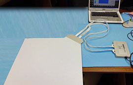

LL Sensor(エルエルセンサー)
株式会社シロク(現 株式会社ニューコム シロク事業部)と茨城県工業技術センターの共同開発で生まれた世界初の「電磁誘導方式による圧力分布シートセンサー」です。
様々なものの接触圧力分布をリアルタイムに測定・表示します。『LL Sensor（エルエルセンサー）』のセンサーシートは耐久性に優れ、安価であるため、ご使用の目的に合わせて各種機器に組み込んだり、連結して床一面の大面積フロアセンサーにするなど、業務用・セキュリティ・スポーツ解析・ゲームの入力機器・といった幅広い分野でお使い頂ける製品です。
平成19年2月に世界初の電磁誘導方式による「LLセンサー」を発売以来、業務用ゲーム機や椅子、各種機器への組み込みなど多方面で使用されています。
LL Sensorの仕組み
コイルが直交するセル部と、金属シートを緩衝材で介した単純な構造です。圧力に応じて可動する金属シートがセル部に近づくと電磁結合が変化し、その結合係数を検出することにより、各セルの圧力を独立して表示します。
【特徴】
- ・センサー回路は非接触の為、耐久性に優れている
- ・センサー回路のインピーダンスが低いので大型化が可能
- ・センサー回路の構造が単純な為、安価に量産が可能
【製品比較】
| 方式 | 感圧抵抗方式 | 静電容量方式 | 電磁誘導方式 |
|---|---|---|---|
| 耐久性 | ✕ | ○ | ◎ |
| 価格 | △ | ✕ | ◎ |
| 最大サイズ | △＜1m | △＜1m | ◎＜10m |
| 最小空間分解能 | ◎ 1mm | ◎ 2mm | ○ 4mm |
| 毎秒最大速度 | ◎ 200フレーム | △ 50フレーム | ○ 100フレーム |
| 最小厚さ | ◎ 0.1mm | ○ 0.3mm | △ 2mm |
| 組み込み用途 | ✕(耐久性に難) | ✕(価格に難) | ◎(耐久性・価格に優れる) |
LL Sensorの利用用途/ユーザー事例

【ユーザー事例 座圧・背圧等の測定】
筑波大学「LLセンサー」自動車用シートに組み込んで使用されました。
その他にも、下記のような用途でご利用いただけます。
- ・ゲーム機器などの入力デバイス
- ・椅子に組み込んで、座圧分布の測定
- ・床一面に敷設して歩行解析（800x600のシートを連続敷設）
- ・ローラー、プレス圧の解析
- ・歩行解析
- ・リハビリや介護など医療機器のメンテ補助など
別売りソフト「LL Sensor」では、圧力分布の変化をリアルタイムに3D表示可能で、簡単に複数シートの連続設定を行うオプションなどが追加されています。
| ※ | 評価キットに標準で付属するソフトウエア「LL Test」でも表示の確認はできます。いずれの場合もAPIは提供しています。 |